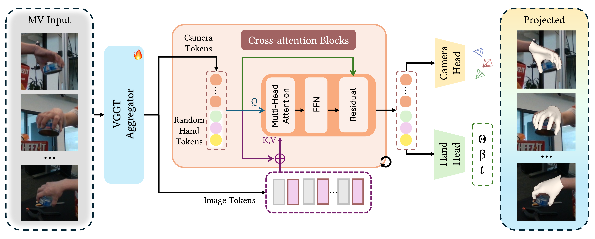
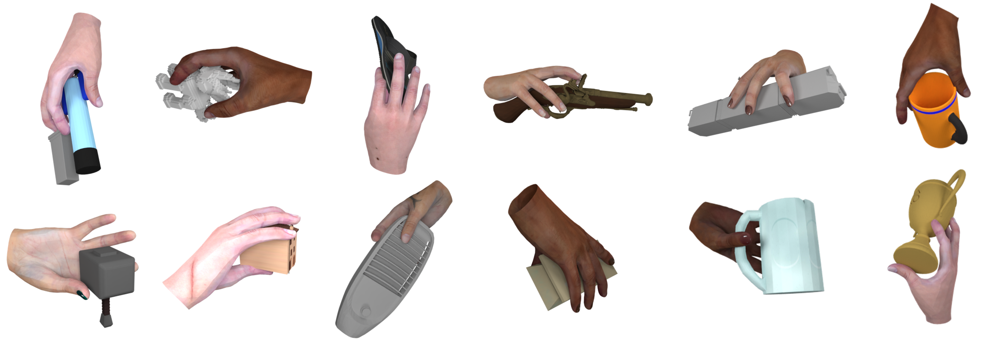
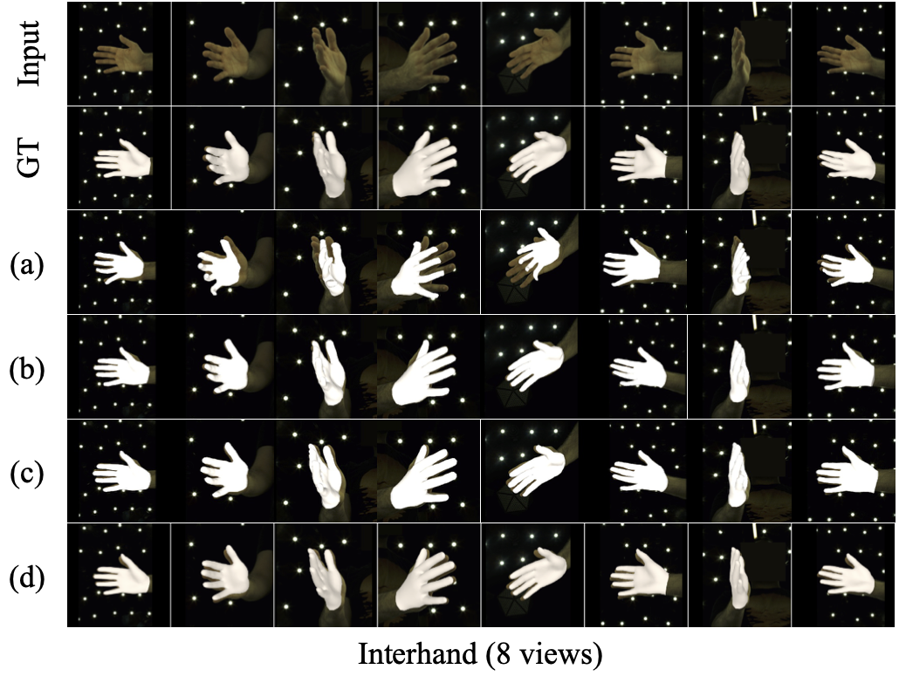
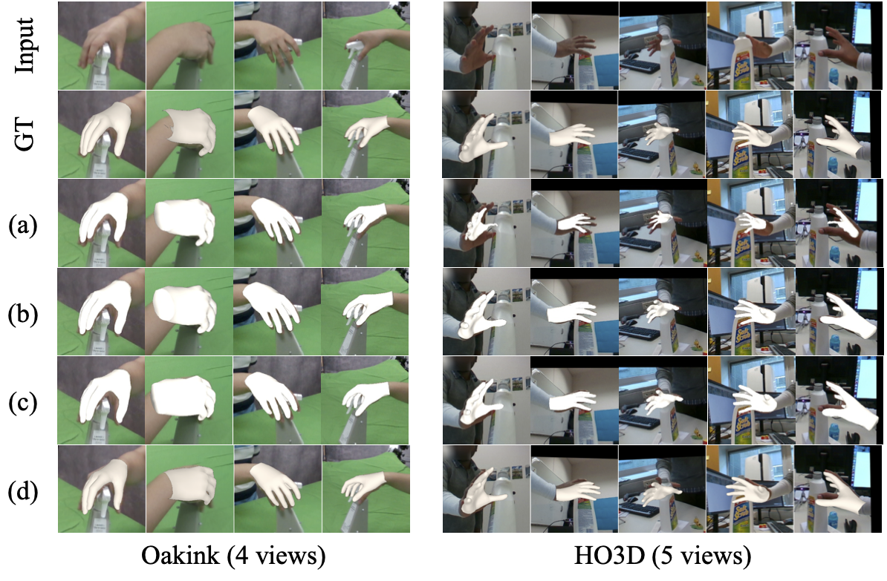
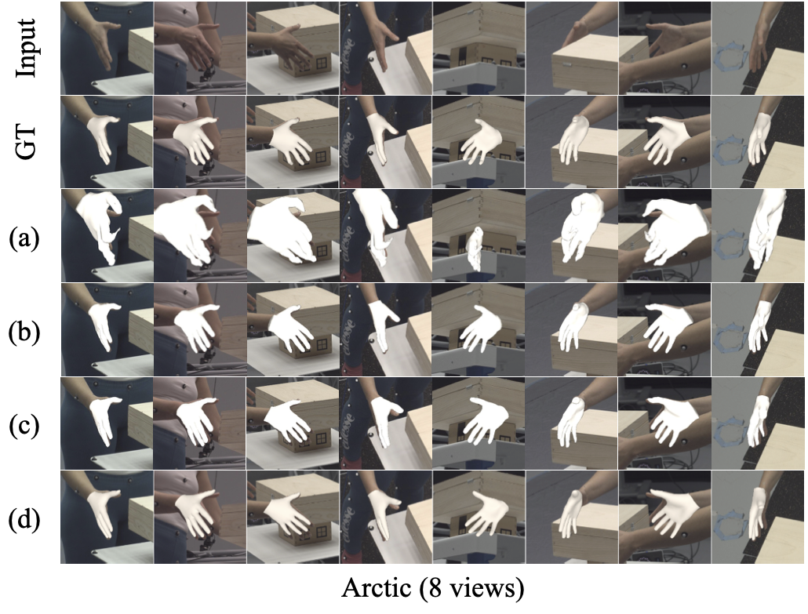
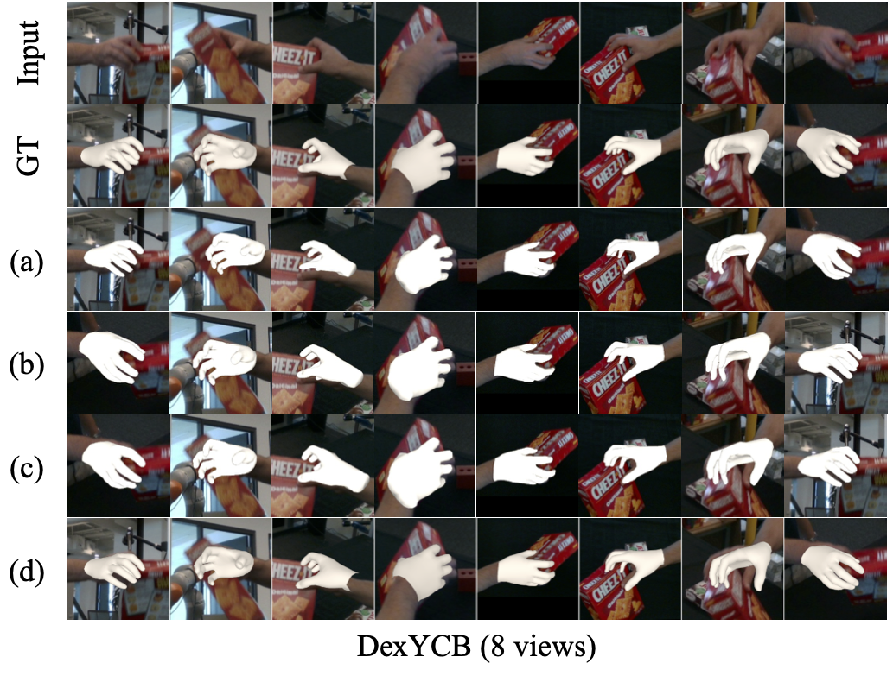
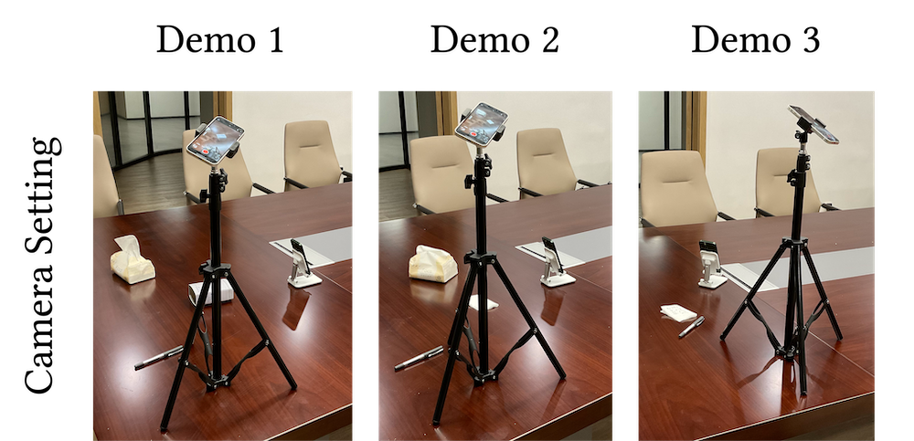
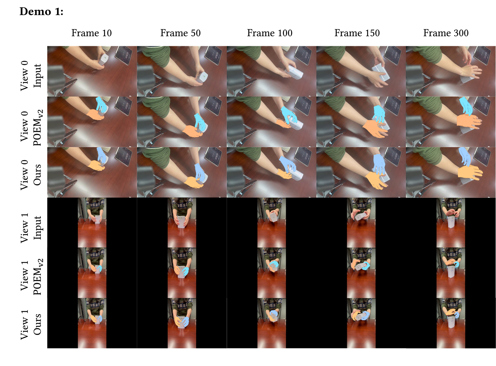
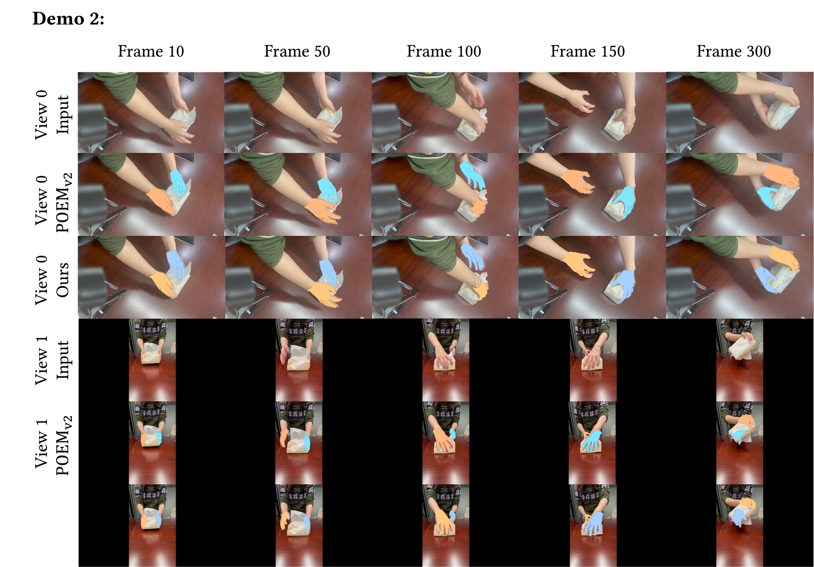

We present the first feed-forward framework that jointly estimates 3D hand meshes and camera poses from uncalibrated multi-view images.
We present the first feed-forward framework that jointly estimates 3D hand meshes and camera poses from uncalibrated multi-view images.
Recovering high-fidelity 3D hand geometry from images is a critical task in computer vision, holding significant value for domains such as robotics, animation and VR/AR. Crucially, scalable applications demand both accuracy and deployment flexibility, requiring the ability to leverage massive amounts of unstructured image data from the internet or enable deployment on consumer-grade RGB cameras without complex calibration. However, current methods face a dilemma. While single-view approaches are easy to deploy, they suffer from depth ambiguity and occlusion. Conversely, multi-view systems resolve these uncertainties but typically demand fixed, calibrated setups, limiting their real-world utility. To bridge this gap, we draw inspiration from 3D foundation models that learn explicit geometry directly from visual data. By reformulating hand reconstruction from arbitrary views as a visual-geometry grounded task, we propose a feed-forward architecture that, for the first time in literature, jointly infers 3D hand meshes and camera poses from uncalibrated views. Extensive evaluations show that our approach outperforms state-of-the-art benchmarks and demonstrates strong generalization to uncalibrated, in-the-wild scenarios.

The pipeline of HGGT. Given uncalibrated multi-view images, we first employ a VGGT Aggregator to extract image tokens and initial camera tokens. These are processed alongside learnable random hand tokens via a series of Cross-attention Blocks. Finally, two parallel heads predict the camera parameters and the canonical MANO parameters (θ, β, t), which can be re-projected onto the input views for verification.

We introduce a new synthetic dataset and a mixed-data training strategy that effectively leverages real monocular data, real multi-view data and synthetic multi-view data. The diversity of data resource significantly enhances the model's generalization capabilities across different domains. Here are some samples from our synthetic dataset. It contains diverse photorealistic hand-object interactions rendered with randomized camera viewpoints, providing critical viewpoint diversity absent in real-world captures.




Qualitative comparison on InterHand2.6M, OakInk, HO3D, Arctic and DexYCB. We compare our method against baselines on open benchmarks. Rows correspond to: Input RGB, Ground Truth, (a) Cameras Predicted by VGGT + POEM-large, (b) POEM-large, (c) Cameras Predicted by Ours + POEM-large, and (d) Ours (Full).




Qualitative results on in-the-wild video sequences. Videos were captured using two phones placed at random positions without calibration. For each camera view, rows correspond to: Input RGB frames, POEMv2 (using camera parameters estimated by our method as input, since POEM v2 requires calibrated cameras), and Ours.
@article{liu2026hggt,
title={HGGT: Robust and Flexible 3D Hand Mesh Reconstruction from Uncalibrated Images},
author={Liu, Yumeng and Long, Xiao-Xiao and Habermann, Marc and Yang, Xuanze and Lin, Cheng and Liu, Yuan and Ma, Yuexin and Wang, Wenping and Liu, Ligang},
journal={arXiv preprint arXiv:2603.23997},
year={2026}
}
}